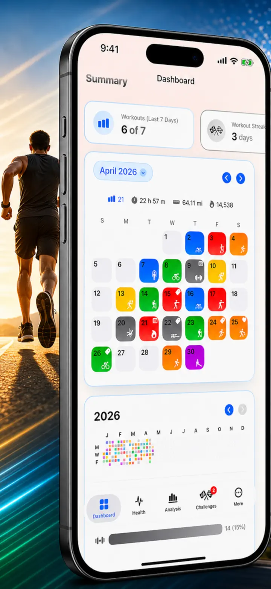
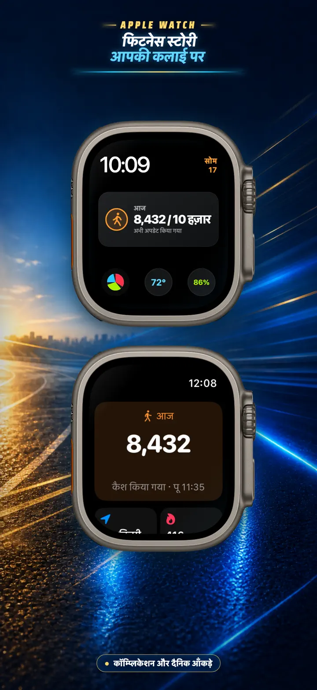
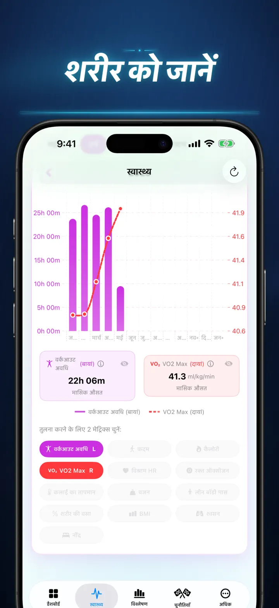
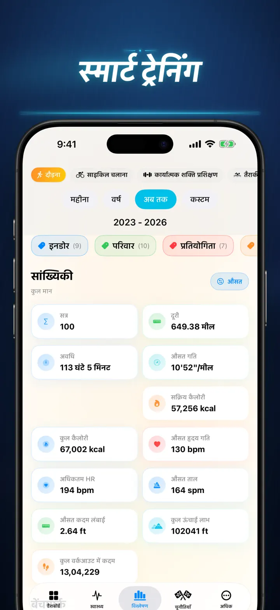
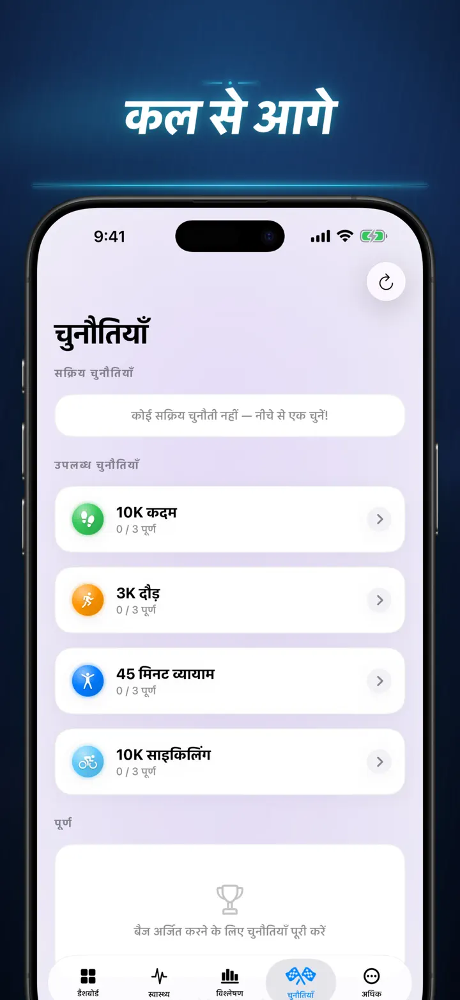
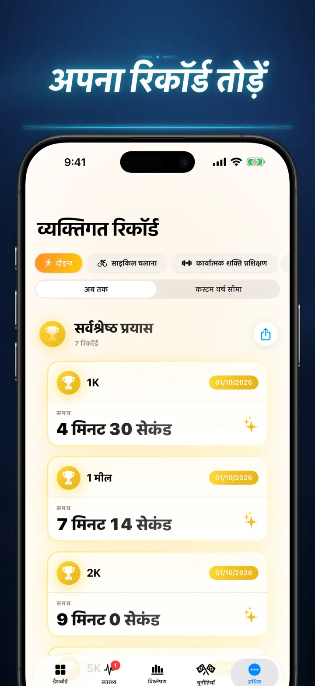
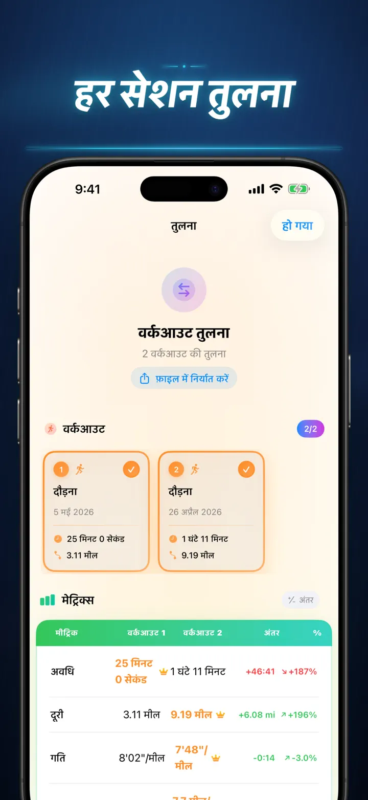
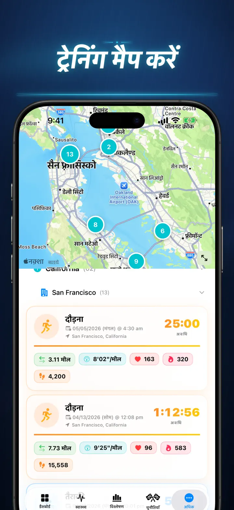
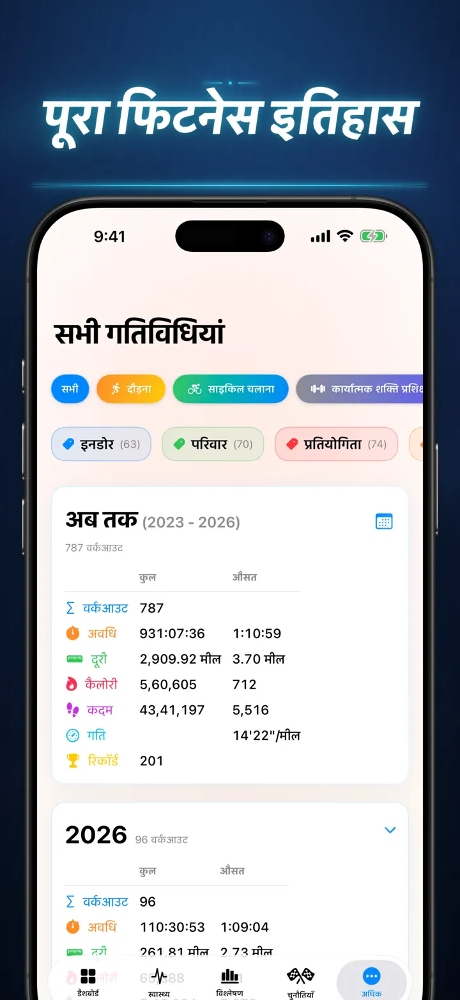

फिटनेस स्टोरी
अपने वर्कआउट इनसाइट पाएं
अब Apple Watch पर: किसी भी वॉच फ़ेस पर आज के कदम, साथ में दूरी, कैलोरी और मंज़िलों वाली “आज” स्क्रीन — सीधे Apple Health से।
App Store से डाउनलोड करें
ऐप के बारे में
अंदाज़ा लगाना बंद करो। समझना शुरू करो। फिटनेस स्टोरी आपके Apple Health डेटा को iOS पर उपलब्ध सबसे शक्तिशाली और विस्तृत एनालिसिस में बदल देता है। कोई अकाउंट नहीं। कोई सर्वर नहीं। बस आपकी पूरी फिटनेस जर्नी, विज़ुअलाइज़्ड।
चाहे आप नींद के चरणों को ट्रैक कर रहे हों, रनिंग cadence एनालाइज़ कर रहे हों, या marathon PR का पीछा कर रहे हों — यह वो all-in-one डैशबोर्ड है जिसकी आपकी मेहनत हकदार है।
Apple Health से सिंक होने वाले किसी भी डिवाइस या ऐप के साथ काम करता है — Apple Watch, Garmin, Polar, Suunto, Zwift और भी बहुत कुछ।
प्रोफेशनल-ग्रेड एनालिसिस
- Trend & Benchmark Charts: Box-and-Whisker plots से हर स्पोर्ट टाइप के median, quartiles और outliers देखें।
- Granular Breakdowns: अपनी हिस्ट्री को समय, दूरी, अवधि, Pace, Elevation gain, Cadence और Stride Length के आधार पर फ़िल्टर करें।
- सब कुछ रैंक करें: एक टैप से आज की मेट्रिक्स (दूरी, Pace, HR, आदि) की तुलना अपनी पूरी हिस्ट्री से करें। तुरंत जानें कि आपकी परफ़ॉर्मेंस "Top 15%" में है या नहीं।
- Contribution Graph: आपकी पूरी workout हिस्ट्री का GitHub-स्टाइल heatmap। डेली स्टैट्स देखने के लिए पलटें।
WORKOUT डिटेल्स — नए अंदाज़ में
- Smart Maps: अपने आउटडोर रूट्स को Speed, Elevation, या Heart Rate Zones के हिसाब से कलर-कोड करें। (China Map Correction शामिल)।
- Deep Split Analysis: हर लैप के लिए KM या Mile splits देखें — pace, elevation, HR और cadence के साथ।
- Heart Rate Zones: अपनी उम्र और resting heart rate के आधार पर कस्टम Zone 1–5 में बिताया गया समय विज़ुअलाइज़ करें।
- Rich Context: हर workout में फ़ोटो, रिच टेक्स्ट नोट्स, एफर्ट रेटिंग (1–10), और कस्टम टैग्स जोड़ें।
संपूर्ण हेल्थ कमांड सेंटर
- आपकी Apple Watch जो कुछ भी मापती है, डेली, वीकली और ईयरली trends के साथ एक जगह विज़ुअलाइज़्ड:
- कार्डियो हेल्थ: Resting Heart Rate, VO2 Max (उम्र-समायोजित), Blood Oxygen, और Respiratory Rate।
- बॉडी कम्पोज़िशन: वज़न, Body Fat %, Lean Body Mass, और BMI — trend इंडिकेटर्स के साथ।
- एक्टिविटी और रिकवरी: कदम (घंटेवार ब्रेकडाउन), Active vs. Basal Calories, और Wrist Temperature विचलन।
- एडवांस्ड स्लीप ट्रैकिंग: Deep, Core, REM, और Awake स्टेज रात-दर-रात विज़ुअलाइज़्ड।
- Correlation Overlays: कई हेल्थ मेट्रिक्स को ओवरले करें और देखें कि आपकी नींद कैसे आपकी heart rate को प्रभावित करती है या आपका वज़न VO2 Max पर कैसे असर डालता है।
तुलना करें और प्रतिस्पर्धा करें
- Workout Comparison: 10 workouts तक सिलेक्ट करें और side-by-side तुलना करें। हर मेट्रिक के लिए variance प्रतिशत देखें (जैसे, "+1.5% तेज़") — स्प्लिट-वाइज़!
- Comparison Export: अलग डेटा टूल्स से एनालिसिस करना चाहते हैं? अपनी workout comparison एक्सपोर्ट करें!
- Personal Records: 1K, 5K, 10K, Half, Marathon, और कस्टम दूरियों के लिए ऑटोमैटिक ट्रैकिंग। Gold, Silver और Bronze ट्रॉफ़ी अर्जित करें।
- Story Timeline: हर milestone, रिकॉर्ड और workout का कालानुक्रमिक फ़ीड।
आपका डेटा, हर जगह
- Global Map: एक इंटरैक्टिव वर्ल्ड मैप पर वो हर जगह देखें जहाँ आपने कभी एक्सरसाइज़ किया।
- Powerful Export: अपनी पूरी हिस्ट्री (या कस्टम रेंज) CSV या JSON में एक्सपोर्ट करें। पूरा स्प्लिट डेटा, बॉडी मेट्रिक्स और मेटाडेटा शामिल।
- iCloud Sync: आपके फ़ेवरिट्स, टैग्स, नोट्स और रेटिंग्स सभी डिवाइसेज़ पर तुरंत सिंक।
- Privacy First: कोई छुपे सर्वर नहीं। आपका डेटा आपके डिवाइस और प्राइवेट iCloud में रहता है।
- आपके पसीने की एक कहानी है। अब उसे पढ़ने का वक़्त है। आज ही फिटनेस स्टोरी डाउनलोड करें।
फिटनेस स्टोरी डाउनलोड करें और अपनी असली प्रगति जानें!
Privacy Policy: https://masawata.net/privacy-policy.html Terms Of Service: https://www.apple.com/legal/internet-services/itunes/dev/stdeula/
स्क्रीनशॉट








फिटनेस स्टोरी
अब Apple Watch पर: किसी भी वॉच फ़ेस पर आज के कदम, साथ में दूरी, कैलोरी और मंज़िलों वाली “आज” स्क्रीन — सीधे Apple Health से।
App Store से डाउनलोड करें